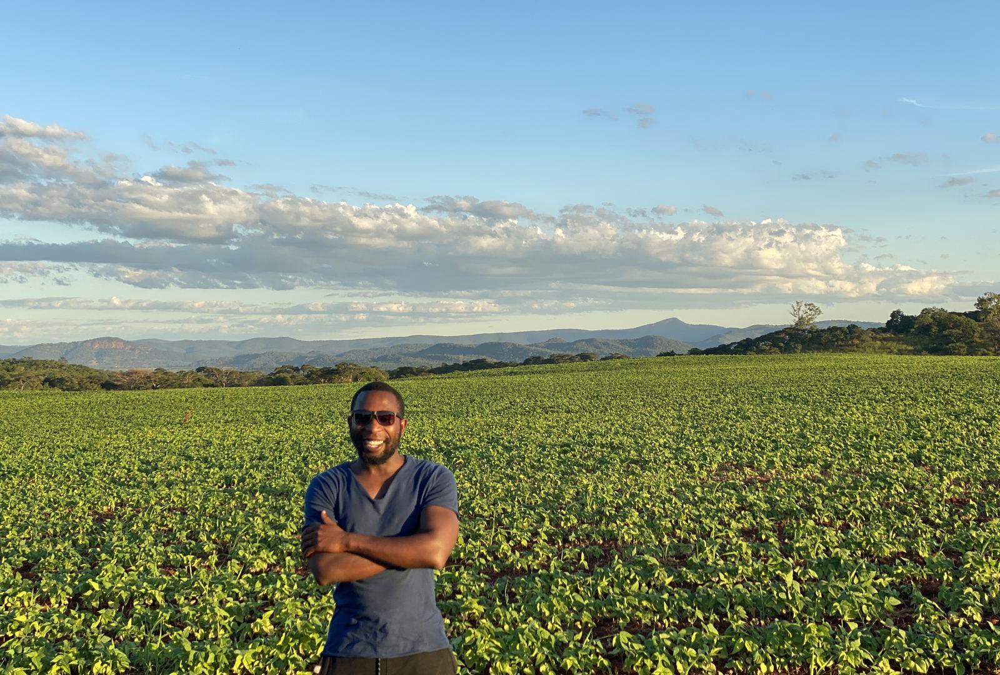

About
I'm an engineer who became an operator, and an operator who became an analyst. Each step happened because the previous one kept running into the same wall: decisions are only as good as the numbers behind them.

I trained as a mechatronics engineer (BEng, Chinhoyi University of Technology, Zimbabwe), which means I can run a lathe, weld, and commission a PLC line, and my first taste of operations was an internship at a dairy processor where I ended up in charge of an ice cream cone production line. After graduating I ran independent farming projects, which in 2018 became Weird Leaf Investments: a commercial agricultural operation I co-founded and ran as Operations Director across three farm sites with 250+ seasonal staff at peak. The business ran on data capture and reporting systems I designed, because nothing existed to buy: daily production, labour, and inventory visibility, crop-level KPI targets, and the seasonal financing models the operation was funded on.
In 2021 I founded Thinnoff Investments, a real estate business that bought run-down houses in high-value Harare neighbourhoods, renovated or rebuilt them, and sold them: five projects delivered end to end at 35% average ROI, managing 25 trades personnel across six disciplines with budget-versus-actual cost control on every project.
In 2025 I moved to Boston for Hult International Business School's MS in Business Analytics (STEM-designated), graduating in August 2026 on the Dean's List. The degree gave my operator's judgment a proper toolkit: SQL, Python, R, Power BI, machine learning, and optimization. The projects on this site are where the two halves meet.
I'm eligible for up to 36 months of US work authorization through F-1 OPT and STEM OPT, open to relocation anywhere in the US, and I actively prefer roles that put me near the operations rather than behind a desk.
Contact
Email coonyoka@gmail.com, find me on LinkedIn and GitHub, or download my CV.